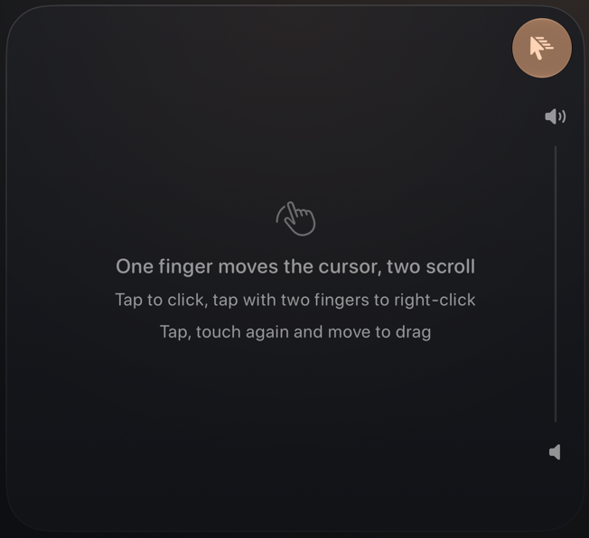
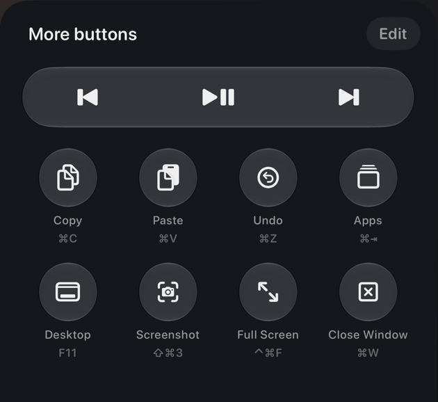
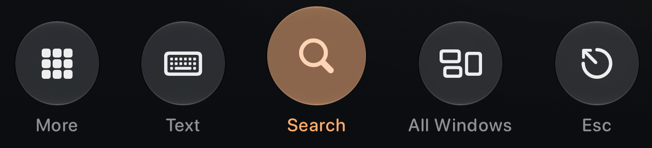

Your Mac.In your hand.
Use your iPhone as a trackpad, keyboard and remote for your Mac.
Free. For any Mac with macOS 14 or later.
Mac control in the iPhone app is part of CursorApp Pro.

A trackpad you already know.
Try it right here.
Your MacPointer 756, 491Clicks 0

Drag to move the pointer, tap to click. With a keyboard, use the arrow keys and Enter.Eight shortcuts. One tap each.
Copy, paste, screenshot, full screen and more. Swap any button for your own.

The dock does the rest.
Search opens Spotlight, All Windows shows every window, and Text brings up the iPhone keyboard.

Free and private.
Checked by Apple
Helper is signed by its developer and notarized by Apple. Updates are signed too.
Stays on your Wi‑Fi
Your iPhone talks to your Mac directly. No account, no servers in between.
Set up in three steps.
Your iPhone and Mac need to be on the same Wi‑Fi.
Install Helper
Open the download. Drag CursorApp Helper into Applications, then open it.
Allow control
Turn on CursorApp Helper in System Settings → Privacy & Security → Accessibility.
Pair your iPhone
Choose “Pair a Phone…” in the Helper menu. Tap “Search” in CursorApp on your iPhone and choose your Mac.
Common questions.
My Mac doesn’t appear
Check that both devices are on the same network.
Connected, but the cursor won’t move
Turn on CursorApp Helper in System Settings → Privacy & Security → Accessibility.
My Mac stopped responding after an update
In Accessibility, remove CursorApp Helper with the “−” button, then add it again from Applications.
Is Helper free?
Yes, Helper for Mac is free.
Uninstall Helper
Choose “Quit” in the Helper menu and delete Helper from Applications.
Signing and download verification
Helper is signed with Developer ID “Vladislav Sukhov (Y3SRRD5QMG)” and notarized by Apple.
Download SHA-256:
Run shasum -a 256 path/to/file.dmg in Terminal and compare the result.
Your Mac, from the couch.
macOS 14 or later · Apple silicon and Intel